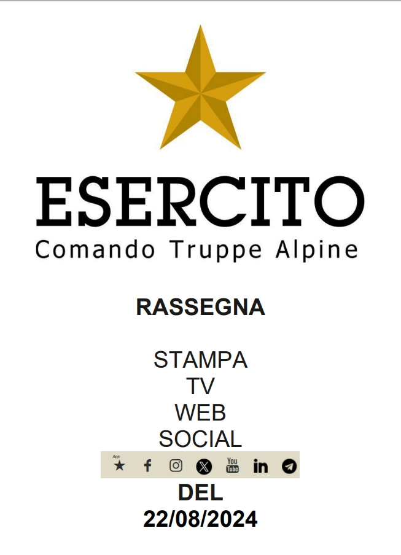

L’iniziativa denominata “Campo Alta Quota” del Centro Addestramento Alpino – Scuola Militare dell’Esercito Italiano è un progetto di studio, sperimentazione e innovazione circa le opportunità e le problematiche connesse con la montagna ed il “grande freddo” circa l’ambiente, i materiali, la fisiologia, l’equipaggiamento e le human performances del personale. Dopo la fase preparatoria volta ad assumere un protocollo scientifico di valutazione grazie alla fattiva collaborazione con espressioni di eccellenza del mondo accademico italiano, la prima edizione di questo processo innovativo artico, il “Campo Alta Quota 2023”, si è tenuta dal 27 novembre al 1° dicembre 2023 presso il Ghiacciaio del Gigante (3500 mt slm) alle pendici del Monte Bianco in Valle d’Aosta. Sono stati giorni intensi e ricchi di risultati, nei quali il clima estremo ha amplificato le possibilità realistiche dei test pianificati dal personale della Scuola insieme al Comitato Scientifico proveniente delle Università di Milano, Bologna e dal Consiglio Nazionale delle Ricerche (CNR), nostri partner in questa esperienza, con i quali si è collaborato in un clima di stima reciproca e che hanno assicurato al progetto l’imprescindibile carattere oggettivo e scientifico.
Per raccontare l’esperienza già vissuta, condividerne i risultati e soprattutto rilanciare con entusiasmo proposte e collaborazioni in vista del prossimo “Campo Alta Quota 2024”, questa Scuola ha pensato di organizzare un “Laboratorio”, sotto forma di incontri divulgativi, tavolo tecnico e “salotto itinerante”, che si terrà tra le Dolomiti nei giorni 19 e 20 agosto 2024.

Scarica il programma completo dell'evento in formato PDF:
Scarica il ProgrammaCliccando sui seguenti link, potrete accedere alle registrazione degli eventi:
Streaming evento Lagazuoi Streaming evento Piazza Dibona - CortinaClicca sull'immagine per visualizzare la rassegna stampa completa



Graduato Giulia Sandali
FUNIVIA LAGAZUOI - Passo Falzarego, 32043 Cortina D'Ampezzo (BL)
PIAZZA ANGELO DIBONA, 32043 Cortina d'Ampezzo (BL)